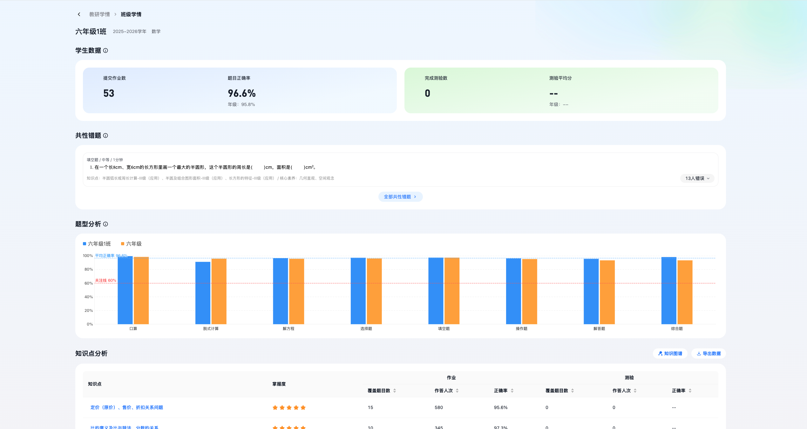
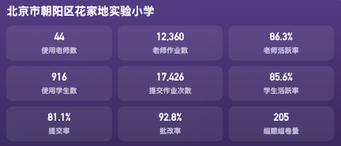

数据时效
- frog 侧指标只能 T+1 计算，不能标记为实时。
- frog 轮动明细按 T-1 快照展示，文案统一写“昨日快照”。
- 已落库的作业、提交、批改等明细可实时读取。
评审修订稿 · 2026.07.06 · 新增文件，不覆盖原 HTML
本版把评审建议落到界面规则中：frog 指标 T+1 计算、frog 轮动明细按 T-1 快照、落库数据实时；商品和合约进入权限范围；暂不跳回飞象作业内部。
用于补齐 frog 来源页面。正式评审时替换为实际 frog 页面截图，并标注字段：学校、班级、作业、提交、批改、AI 功能事件。
用于说明班级、学科、提交、批改等落库数据从现有页面取数，支持实时读取。

用于对应区域下钻到单校后的班级学科明细，展示筛选上下文、学校和学科口径。

区域页默认先选学年，再在学年内选择学期和日期。寒暑假未配置时不进入统计，AI 龙老师能力只在学年内开放。
| 学校 | 使用学生数 | 老师作业数 | 操作 |
|---|---|---|---|
| 北京市第八十中学 | 1,932 | 418 | |
| 花家地实验小学 | 1,284 | 336 | |
| 陈经纶中学分校 | 1,568 | 392 |
事件类型精简为四类，避免暴露过多不可实时取的 frog 明细。
T-1八十中学新增作业 42 份发布作业
T-1花家地实验小学提交 1,028 人次提交作业
T-1陈经纶中学分校 AI 讲题 326 次AI 功能使用
继承区域筛选：2025-2026 学年，2026.03.01 至 2026.06.30，商品智慧作业，合约朝阳区 2026。
单元格只展示班级、学科、作业数、班级平均提交率、班级平均批改率；不展示正确率。学科逻辑：小学展示数学、英语、语文、科学、体育；初高中展示数学、英语、物理、语文、化学、生物，按学校开设学科过滤。
文案统一补“班级”：班级平均提交率、班级平均批改率、班级平均正确率。点击教师只定位本页线索，不跳飞象作业内部。
从区域下钻时沿用日期范围；若用户单独调整日期，也只影响本单校页。
单校动态同样精简为四类；来自 frog 的事件标注为昨日快照，来自落库的事件可显示实时。
实时赵明老师发布八(1)数学作业 42 份落库
T-1学生使用 AI 讲题 184 次frog
实时周磊老师完成九(1)物理批改落库
教研看板使用非实时统计，筛选项带入单校教研页；单元只展示有知识点的单元，质量诊断明确为单元维度、区域汇总口径。
| 单元 | 知识点数 | 诊断范围 | 展示规则 |
|---|---|---|---|
| 一次函数 | 12 | 全区学校汇总 | 展示 |
| 平行四边形 | 9 | 全区学校汇总 | 展示 |
| 统计初步 | 0 | 无知识点 | 不展示 |
单元列表过滤掉无知识点单元，避免教研页出现空诊断。